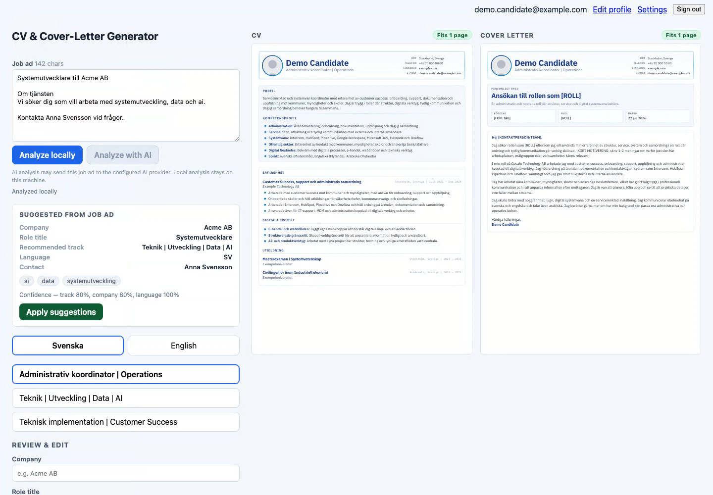

SoherDocs
A private workspace for analyzing a role, tailoring an application, and exporting owned CV and cover-letter artifacts.
The product images below are a polished interface direction built around the verified SoherDocs workflow and synthetic demo data.
The product view
Four still states show the workspace, local analysis, document tailoring, and export without turning the page into another video player.


Product visualization, not the recorded shipped interface. It keeps the verified workflow and synthetic scenario intact while showing a considered frontend direction. Open the visualization source.

Actual runtime evidence
The real production build ran in Playwright Chromium with a synthetic account, throwaway PostgreSQL, and temporary artifact storage.
- Credentials flowPassed
- Local analysisPassed
- Private artifacts6
- Provider calls0
Private source is available for a supervised technical review or time-bounded read-only access after scope confirmation.
Contact via LinkedIn